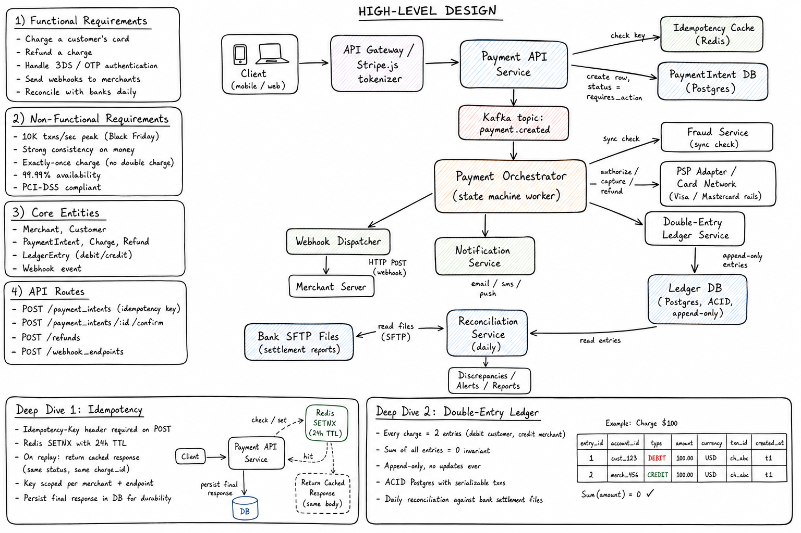
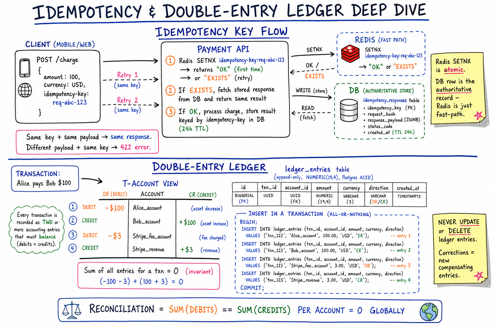
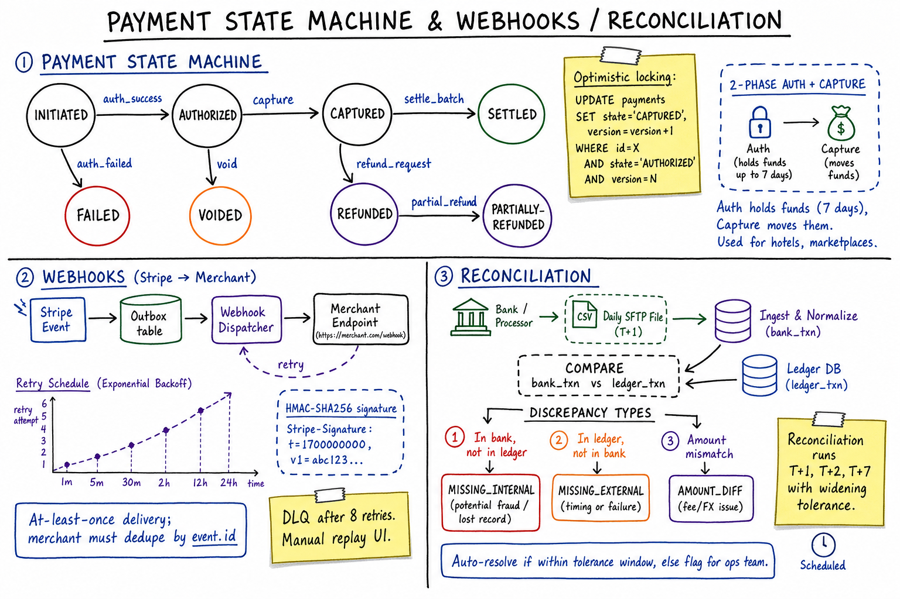

Payment System // Stripe HLD
Financial-grade design: idempotency keys, double-entry ledger, payment state machine, two-phase auth/capture, PCI tokenization, webhooks, reconciliation, and exactly-once money movement.

Whiteboard-style HLD: client → tokenizer → Payment API → orchestrator → PSP / ledger / webhooks / reconciliation.
01 — Requirements
Functional
- Charge a customer's card (one-time + recurring)
- Refund charges (full or partial)
- 3DS / OTP authentication (SCA in EU, RBI in IN)
- Webhooks to merchants on status changes
- Daily reconciliation with banks
- Multiple PSPs / card networks (Visa, MC, Amex)
Non-Functional
- 10K txns/sec peak (Black Friday, sale events)
- Strong consistency on money — no double charge, no lost charge
- Exactly-once money movement
- 99.99% availability
- PCI-DSS compliant — raw card data never touches your servers
- Auditability — every cent traceable
02 — Estimation
Peak 10K txns/sec Avg txn $50 Daily peak vol ~860M txns → $43B/day Storage/txn ~2KB Daily storage ~1.7TB/day Read:Write ~10:1 Webhooks/sec ~10K
03 — PCI / Tokenization
PCI-DSS = compliance standard. If your servers EVER see raw card numbers, you must be PCI Level 1 (quarterly audits, network segmentation, $$$).
Stripe.js Tokenization Flow
1. Browser loads Stripe.js (hosted by Stripe) 2. User enters card → sent DIRECTLY to Stripe's vault 3. Stripe returns TOKEN (tok_xxx) — opaque, non-sensitive 4. Browser sends ONLY token to your server 5. Your server uses token to create charge → Your servers NEVER see raw card data → minimal PCI scope. VAULT: HSM-encrypted, isolated subnet.
04 — High-Level Architecture
Client → Stripe.js (tokenize) → Payment API
|
+----------+---------+---------+
v v v
Idempotency PaymentIntent Kafka
Cache(Redis) DB(Postgres) payment.created
|
v
Payment Orchestrator
(state machine worker)
|
+----------+--------------+---------+
v v v v
Fraud Svc PSP/Card Net Double-Entry Webhook
Ledger Svc Dispatcher
| |
v v
Ledger DB Merchant Server
(Postgres, ACID,
append-only)
|
v
Reconciliation Svc
(daily, bank SFTP files)
Zoom-in: idempotency-key flow (Redis SETNX as atomic fast-path, DB row as authoritative store, 24h TTL, retries return same response) and double-entry ledger (append-only, NUMERIC(19,4), every txn = 2+ entries summing to zero, T-account view, Postgres ACID transaction enforcing all-or-nothing, reconciliation invariant: sum(debits) == sum(credits) per account globally).
05 — Deep Dive: Idempotency
Why: network can fail mid-request. Client retries. Without idempotency → user charged TWICE.
Client sends:
POST /payment_intents
Idempotency-Key: a3f4-bc5e-d678-9012 ← UUID per logical op
Body: { amount: 5000, source: "tok_xxx" }
Server:
1. SETNX idempotency:{merchant}:{key} "in_progress" EX 24h
- SETNX = 1 → first request, proceed.
- SETNX = 0 → replay. Return cached response.
2. Process → create PaymentIntent.
3. Save final response in Redis (24h) AND in DB.
4. Return response.
Guarantees:
- Same key + same body → SAME response (replay-safe)
- Same key + diff body → 422 error (catches bugs)
- Scoped per merchant (avoid key collisions)
- 24h scope is industry standard
Durability: Redis + DB (unique index on merchant_id + key).06 — Deep Dive: Double-Entry Ledger
Most important concept in money systems. 500-year-old accounting wisdom.
PRINCIPLE: Every txn = TWO entries.
- One DEBIT (money leaves)
- One CREDIT (money enters)
Sum of all entries for txn = 0.
Example: Customer pays merchant $100.
Entry 1: customer_card, DEBIT, $100, txn=ch_abc
Entry 2: merchant_pending, CREDIT, $100, txn=ch_abc
Later: Stripe settles $100 to merchant bank.
Entry 3: merchant_pending, DEBIT, $100, txn=pay_xyz
Entry 4: merchant_bank, CREDIT, $100, txn=pay_xyz
Refund:
Entry 5: merchant_pending, DEBIT, $100, txn=re_def
Entry 6: customer_card, CREDIT, $100, txn=re_def
Balance(account) = SUM(amount * sign) for that account.
SCHEMA:
CREATE TABLE ledger_entries (
entry_id BIGSERIAL PRIMARY KEY,
account_id BIGINT NOT NULL,
type CHAR(6) CHECK (type IN ('DEBIT','CREDIT')),
amount NUMERIC(18,4) NOT NULL, -- NEVER FLOAT!
currency CHAR(3),
txn_id VARCHAR(64) NOT NULL,
created_at TIMESTAMPTZ DEFAULT NOW()
);
-- APPEND-ONLY. No UPDATE, no DELETE, ever.
-- Corrections = reversing entry + corrected entry.
Why double-entry is gold
- Audit trail is automatic — every cent traceable
- Corrections preserved as new entries (not silent updates)
- Balance always derivable — never goes out of sync
- Invariant check: total debits = total credits
- Append = naturally concurrent-safe (no row contention)
NEVER use float/double for money. Use NUMERIC / BigDecimal / integer cents. Floats lose money to rounding → audit nightmare.
Zoom-in: payment state machine (INITIATED → AUTHORIZED → CAPTURED → SETTLED with VOIDED/FAILED/REFUNDED branches, optimistic locking on version), 2-phase auth+capture (auth holds funds 7 days, capture moves them); webhooks (outbox → dispatcher → merchant with exponential-backoff retries 1m/5m/30m/2h/12h/24h, HMAC-SHA256 signature, at-least-once + dedupe, DLQ after 8 retries); reconciliation (daily SFTP, 3 discrepancy types, widening tolerance T+1/T+2/T+7).
07 — Payment State Machine
INITIATED
|
v
REQUIRES_AUTH <-- 3DS / OTP
|
v
AUTHORIZED <-- bank reserved funds
/ \
v v
CAPTURED CANCELLED
|
v
SETTLED <-- T+2 days, money in merchant bank
|
v
REFUNDED
Terminal failures:
FAILED (declined)
EXPIRED (auth not captured in 7 days)
CHARGEBACK (customer disputed via bank)
OPTIMISTIC LOCKING:
UPDATE payment_intents
SET status='CAPTURED', version=version+1
WHERE id=$1 AND version=$2 AND status='AUTHORIZED';
-- 0 rows → another worker beat us → re-read.08 — Authorize vs Capture (2-Phase)
WHY 2 PHASES?
E-commerce: charge AFTER shipping.
Hotels: hold $500, charge actual on checkout.
1. AUTHORIZE
- Bank reserves funds, card limit reduced
- No money moves yet
- Valid ~7 days
2. CAPTURE
- Tell bank to actually move funds
- Settles T+2 into merchant bank
- Can capture LESS than authorized
ONE-STEP (sale): auth + capture in one API call.
API:
POST /payment_intents { capture_method: "manual" }
→ status REQUIRES_CAPTURE
POST /payment_intents/:id/capture { amount_to_capture: 5000 }
→ status CAPTURED09 — Webhooks (Async Merchant Notification)
FLOW: Event happens → Webhook Dispatcher pulls from Kafka → HTTP POST to merchant's webhook URL → Sign with HMAC-SHA256(secret, ts + "." + payload) → Header: Stripe-Signature: t=...,v1=... → Wait for 2xx (timeout 30s) RETRY: Exponential: 1m, 5m, 30m, 2h, 6h, 1d, 3d Max 3 days → DLQ → merchant dashboard GUARANTEES: - At-least-once delivery (merchant MUST be idempotent) - Order NOT guaranteed (merchant should check current state, not events) - Timestamp in signature → prevents replay attacks
10 — Reconciliation
Daily check: does our ledger match the bank's settlement file?
BANK delivers CSV/XML via SFTP at end of day.
WE have our ledger.
Match them:
for each txn in bank_file:
if txn in our_ledger & amount matches → OK
else → DISCREPANCY → alert
for each our_txn marked SETTLED:
if not in bank_file → DISCREPANCY → alert
Common discrepancies:
- Bank has txn we don't → we lost the response
- We have txn bank doesn't → we charged twice, bank deduped
- Amount mismatch → fees, FX, partial captures
- Late settlement → timing diff
Resolution:
- Auto-correct timing issues via ledger reversal + re-entry
- Human review for material differences
- Critical for SOC2 + customer trust11 — Fraud Detection
SYNC (at charge time): - Velocity: too many txns from same card? - Geolocation: IP country ≠ card country? - 3DS challenge for high-risk - BIN reputation - ML model (Stripe Radar / Sift) → Risk score 0-100. If > threshold → 3DS or decline. ASYNC: - Stream charges to Kafka → Flink windowed aggs - ML model retrains daily on confirmed fraud + chargebacks - Flag merchant accounts for review CHARGEBACK: - Bank reverses charge weeks/months later - Webhook to merchant - Auto-debit from merchant pending balance - Dispute UI for evidence upload
12 — Achieving Exactly-Once Charging
Steps that can each fail / retry independently:
1. Deduct from customer
2. Credit to merchant
3. Write ledger
4. Send webhook
How to ensure $100 charged EXACTLY ONCE?
STRATEGY: idempotency at EVERY layer + atomic DB txn.
1. EXTERNAL idempotency: client → API via Idempotency-Key
2. INTERNAL idempotency: orchestrator → PSP via unique ref
3. ATOMIC LEDGER WRITE:
BEGIN;
INSERT INTO ledger_entries ...; -- debit
INSERT INTO ledger_entries ...; -- credit
UPDATE payment_intents SET status='CAPTURED', version=v+1
WHERE id=$1 AND version=$2;
COMMIT;
4. OUTBOX PATTERN for webhook + Kafka:
Write event to "outbox" table in SAME txn as ledger.
Background poller reads outbox → Kafka.
→ exactly-once into Kafka.
5. CONSUMER idempotency: check event_id already processed.
Never trust network. Always trust ledger + idempotency keys.13 — Edge Cases
| Concern | Handling |
|---|---|
| Network timeout on charge | Idempotency-Key replay returns cached response. |
| Card declined | Specific error codes. Don't expose bank reason verbatim. |
| 3DS challenge timeout | Auto-cancel REQUIRES_AUTH after 30 min. |
| Partial captures | Multiple captures ≤ authorized; each = ledger entry. |
| Refund > original | Reject. Multiple refunds sum ≤ captured. |
| Currency mismatch | Reject. No implicit FX. |
| Floating point bugs | NUMERIC / BigDecimal / integer cents only. |
| Chargeback / dispute | Auto-debit from merchant pending. Hold dispute reserve. |
| PSP outage | Failover to secondary PSP. Or queue + backoff retry. |
| DB outage mid-charge | FAIL the charge rather than write partial state. Reconciliation cleans up. |
| Webhook URL down | 3-day exponential retry → DLQ → merchant notification. |
| Subscriptions | Separate service. Handles dunning (retry failed renewals). |
14 — Scaling
DATABASE (hardest part): - Vertical first (Postgres on big instances) - Shard by merchant_id - Read replicas for dashboards - Cold storage: settled txns > 1yr → S3 + Parquet - NEVER eventually-consistent DB for money (no Cassandra/Dynamo for ledger) API: - Stateless → horizontal scale behind ALB - Per-merchant rate limit via Redis token bucket - Region-pinned by merchant home region ORCHESTRATOR: - Kafka partition by payment_intent_id (preserves per-payment order) LEDGER: - Append-only → no write contention - Hot accounts (platform fee) → shard ledger by account_id - Balance via materialized view, refreshed periodically GLOBAL: - EU data in EU (GDPR) - Multi-region active-active is HARD for money - Most payment systems: single region + regional read replicas
15 — Real-World Systems
| System | Approach |
|---|---|
| Stripe | Idempotency-Key REST, internal double-entry ledger, frictionless 3DS2, industry-standard webhooks. |
| PayPal | Order/Authorize/Capture REST, internal ledger, slower webhooks. |
| Adyen | Direct PSP, more raw API, excellent 3DS. |
| Razorpay | UPI + cards, webhook-heavy, India-optimized. |
16 — Interview Q&A
How do you prevent double-charging?
Idempotency-Key on every POST. Client generates UUID, server uses Redis SETNX to dedupe within 24h. Persist final response to both Redis and DB. Same key + same body → same cached response. Same key + different body → 422.
Why double-entry ledger?
Every txn = debit + credit (sum = 0). Append-only, no updates. Balance is computed from entries. Self-auditing: total debits should equal total credits across the system. Corrections are new entries (reversal + corrected), never silent updates. This is how every bank, accounting system, and serious payment system tracks money.
Why not use float for money?
Floating-point can't represent 0.10 exactly. 0.1 + 0.2 = 0.30000000000000004. Accumulating errors lose money. Use NUMERIC(18,4) in Postgres, BigDecimal in Java, or store integer cents. Audit teams will fail you for using float on money.
How do you handle PCI compliance?
Tokenize card data client-side via Stripe.js (hosted iframe sends card directly to Stripe vault, returns opaque token). Your servers never see raw PAN. This reduces PCI scope from Level 1 (quarterly audits, expensive) to SAQ-A (minimal). Token vault uses HSM-encrypted, isolated subnet.
Why two-phase auth/capture?
E-commerce charges after shipping (uncertain timing). Hotels hold funds and charge actual usage at checkout. Authorize reserves bank funds (no money moves); capture moves them. Allows partial captures (up to authed amount) and clean cancellation.
How do you guarantee webhooks are delivered?
At-least-once with exponential backoff (1m, 5m, 30m, 2h, 6h, 1d, 3d) over 3 days. HMAC-signed for authenticity. Merchant must be idempotent (event_id deduplication). After max retries, dead-letter queue with merchant dashboard for manual replay.
Outbox pattern — what and why?
To publish events to Kafka exactly-once with a DB write: write the event to an "outbox" table in the SAME DB transaction as the business change (ledger update). A background poller reads outbox → publishes to Kafka → marks row processed. This avoids the dual-write problem (DB succeeds but Kafka publish fails, or vice versa).
How does reconciliation work?
Bank delivers daily settlement file via SFTP. We compare against our ledger. Discrepancies: (a) bank has txn we don't → we lost the response, (b) we have txn bank doesn't → we double-charged, bank deduped, (c) amount mismatch → fees/FX, (d) timing → settle today, file tomorrow. Auto-correct timing via ledger reversal; human review for material diffs.
How do you scale the ledger to 10K txns/sec?
Append-only inserts → no row contention. Shard by merchant_id. Hot accounts (platform fee) further sharded by account sub-id. Balance via materialized view refreshed periodically (or computed on-demand for accuracy). NEVER use eventually-consistent DB — ledger requires ACID + serializable.
What if Postgres goes down mid-charge?
Fail the charge fast (return 500). Card may have been authed at the bank but our records are incomplete. Reconciliation the next day catches the discrepancy and either captures (if intended) or voids (if not). Never write partial state and "fix later" — that's how money is lost.
SDE-2 vs SDE-3 differentiator?
| SDE-2 | SDE-3 |
|---|---|
| Idempotency-Key, 2-phase auth/capture, webhooks, basic ledger. | + Double-entry invariants, outbox pattern, optimistic locking via version, PCI tokenization, HSM vault, reconciliation discrepancy types, NUMERIC vs float, chargeback flow, exactly-once across multiple components, why money stays on Postgres (not Cassandra), multi-PSP failover, regional + GDPR strategy. |